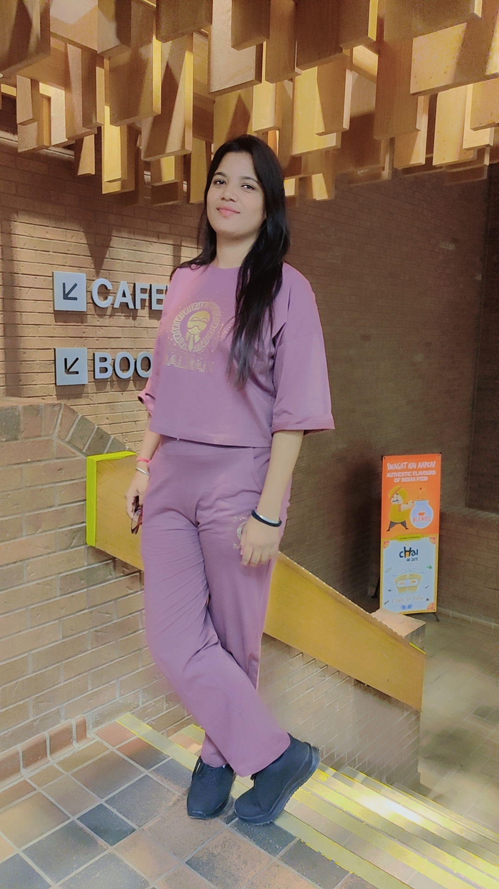
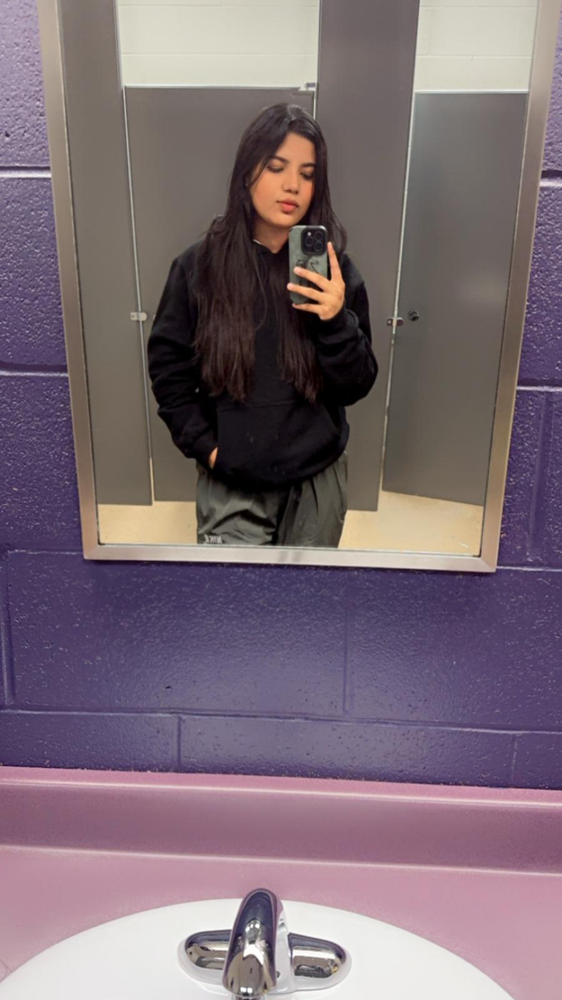
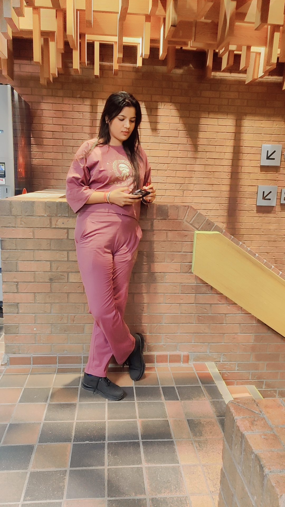

Hello, this is Shanu from Sirsa city, Haryana, India. My full name is Shanu Thakur. I was born on
3rd October 1998. I am graduated from C.M.K national P.G girls college of Sirsa city, India.
I
started job as a SEO executive 3 years ago. And currently I am pursuing Mobile Application
Development
course in Cambrian College, Sudbury, ON.
In future I see myself as a senior Mobile App
developer. My
fascination toward programming pushed me to choose this course. And definitely I can earn more than
enough to meet both ends. I love Painting, and I try to make a Painting every month. On my last
Painting I made a portrait of Lord Shiva. I love to explore new colors nad love to experiment new
things.
Painting allows me to adapt to new situations and use my organization and planning skills to ensure
that I have the most fun I can. When it comes to hobbies, photography is the most significant one in
my life. Not only has it taught me a lot about composition, but it also created an opportunity to
hone my photo editing skills. It is the photo editing aspect of this role that really caught my
attention. Turning images into something spectacular is one of my passions, and I believe that my
experience with my own photography has given me the necessary capabilities to thrive.”